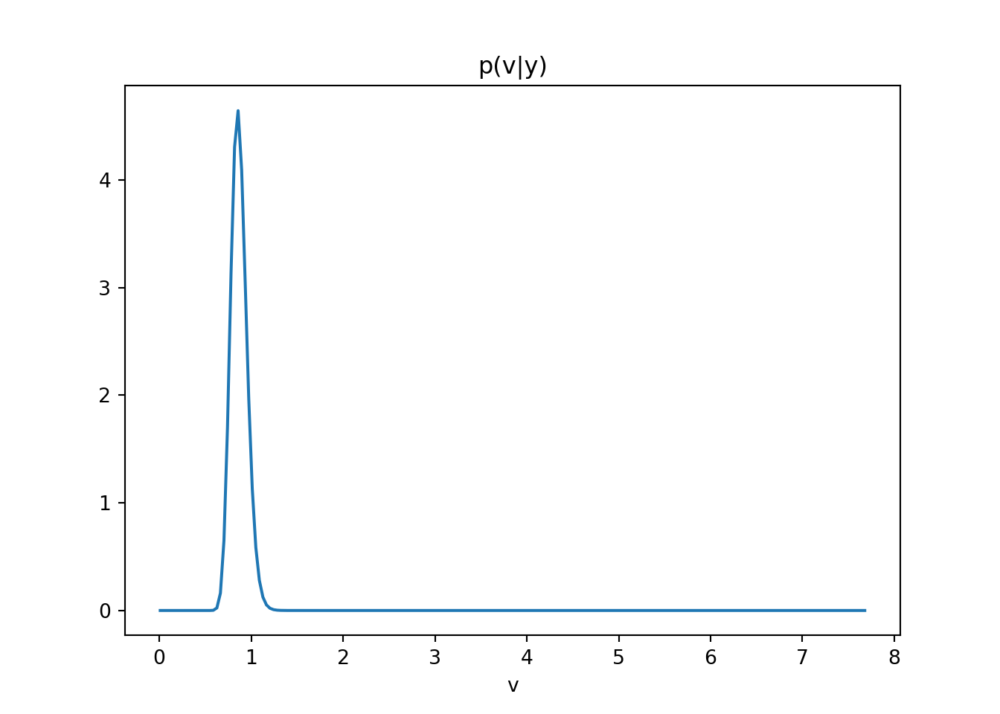

# Exercise 1.7-7: AR(2) and Sinusoidal Models
##########################################################
# This script solves the six tasks in Exercise 1.7-7:
# 1. Simulate T=200 observations from an AR(2) model and a sinusoidal model.
# 2. Compute MLEs of parameters using conditional likelihood for AR(2) and OLS for sinusoid.
# 3. Compute MAP estimators under the reference prior p(φ,v) ∝ 1/v.
# 4. Sketch posterior p(v|y,F) and p(φ₁,φ₂|y,F) for AR(2).
# 5. Sketch posterior p(a,b|y,F) and p(v|y,F) for the sinusoidal model.
# 6. Perform conjugate Bayesian analysis for both models and study sensitivity.
import numpy as np
import matplotlib.pyplot as plt
from scipy.stats import invgamma
#############################
# Part 1: Simulation
#############################
def simulate_ar2(phi, sigma2, T, seed=None):
"""
Generate AR(2) data:
y_t = φ₁ y_{t−1} + φ₂ y_{t−2} + ε_t, ε_t∼N(0,σ²).
Returns array of length T.
"""
if seed is not None:
np.random.seed(seed)
y = np.zeros(T)
eps = np.random.normal(0, np.sqrt(sigma2), size=T)
for t in range(2, T):
y[t] = phi[0]*y[t-1] + phi[1]*y[t-2] + eps[t]
return y
def simulate_sin(ab, omega0, sigma2, T, seed=None):
"""
Generate sinusoidal data:
y_t = a cos(2π ω₀ t) + b sin(2π ω₀ t) + ε_t.
Returns time index and observations.
"""
if seed is not None:
np.random.seed(seed)
t = np.arange(1, T+1)
a, b = ab
deterministic = a*np.cos(2*np.pi*omega0*t) + b*np.sin(2*np.pi*omega0*t)
noise = np.random.normal(0, np.sqrt(sigma2), size=T)
return t, deterministic + noise
#############################
# Part 2: Maximum Likelihood
#############################
def mle_ar2(y):
"""
MLE for AR(2) via OLS on y[2:] ~ y[1:-1], y[:-2].
Returns φ̂ = [φ₁,φ₂], σ̂².
"""
Y = y[2:]
X = np.column_stack([y[1:-1], y[:-2]])
phi_hat, *_ = np.linalg.lstsq(X, Y, rcond=None)
resid = Y - X.dot(phi_hat)
sigma2_hat = np.mean(resid**2)
return phi_hat, sigma2_hat
def mle_sin(y, omega0):
"""
MLE for sinusoid via OLS on y ~ cos(2πω₀t), sin(2πω₀t).
Returns [â,b̂], σ̂².
"""
T = len(y)
t = np.arange(1, T+1)
X = np.column_stack([
np.cos(2*np.pi*omega0*t),
np.sin(2*np.pi*omega0*t)
])
ab_hat, *_ = np.linalg.lstsq(X, y, rcond=None)
resid = y - X.dot(ab_hat)
sigma2_hat = np.mean(resid**2)
return ab_hat, sigma2_hat
#############################
# Part 3: MAP under Reference Prior
#############################
def map_ref_ar2(y):
"""
MAP under p(φ,v) ∝ 1/v for AR(2).
φ̂ same as MLE, v̂ = (SSE/2)/(n/2 + 1).
"""
Y = y[2:]; X = np.column_stack([y[1:-1], y[:-2]])
phi_mle, sigma2_mle = mle_ar2(y)
resid = Y - X.dot(phi_mle)
n = len(Y)
SSE = resid.dot(resid)
alpha, beta = n/2, SSE/2
v_map = beta/(alpha + 1)
return phi_mle, v_map
def map_ref_sin(y, omega0):
"""
MAP under p(a,b,v) ∝ 1/v for sinusoid.
(a,b)̂ same as MLE, v̂ MAP as above.
"""
ab_hat, _ = mle_sin(y, omega0)
t = np.arange(1, len(y)+1)
X = np.column_stack([
np.cos(2*np.pi*omega0*t),
np.sin(2*np.pi*omega0*t)
])
resid = y - X.dot(ab_hat)
n = len(y)
SSE = resid.dot(resid)
alpha, beta = n/2, SSE/2
v_map = beta/(alpha + 1)
return ab_hat, v_map
#############################
# Part 4 & 5: Posterior Sketches
#############################
def plot_posteriors_ar2(phi_map, y):
"""
Plot posterior contours for φ and density for v under reference prior.
"""
Y = y[2:]; X = np.column_stack([y[1:-1], y[:-2]])
phi_hat = phi_map
A_inv = np.linalg.inv(X.T.dot(X))
# φ posterior: approx N(phi_hat, v*inv(X'X)) scaled out v
grid = np.linspace(-1,1,80)
P1,P2 = np.meshgrid(grid+phi_hat[0], grid+phi_hat[1])
invA = np.linalg.inv(A_inv)
norm = 1/(2*np.pi*np.sqrt(np.linalg.det(A_inv)))
Z = norm * np.exp(-0.5*(
invA[0,0]*(P1-phi_hat[0])**2 +
2*invA[0,1]*(P1-phi_hat[0])*(P2-phi_hat[1]) +
invA[1,1]*(P2-phi_hat[1])**2
))
plt.contour(P1,P2,Z)
plt.title("p(φ₁,φ₂|y)"); plt.xlabel('φ₁'); plt.ylabel('φ₂')
plt.show()
resid = Y - X.dot(phi_hat)
n = len(Y); SSE = resid.dot(resid)
alpha,beta = n/2, SSE/2
v_grid = np.linspace(0.01, np.max(resid**2), 200)
plt.plot(v_grid, invgamma.pdf(v_grid, a=alpha, scale=beta))
plt.title("p(v|y)"); plt.xlabel('v'); plt.show()
def plot_posteriors_sin(ab_map, omega0, y):
"""
Plot posterior contours for (a,b) and density for v under reference prior.
"""
a_hat,b_hat = ab_map
t = np.arange(1, len(y)+1)
X = np.column_stack([
np.cos(2*np.pi*omega0*t),
np.sin(2*np.pi*omega0*t)
])
# (a,b) posterior
B_inv = np.linalg.inv(X.T.dot(X))
grid = np.linspace(-1,1,80)
Agrid,Bgrid = np.meshgrid(grid+a_hat, grid+b_hat)
invB = np.linalg.inv(B_inv)
norm = 1/(2*np.pi*np.sqrt(np.linalg.det(B_inv)))
Z = norm * np.exp(-0.5*(
invB[0,0]*(Agrid-a_hat)**2 +
2*invB[0,1]*(Agrid-a_hat)*(Bgrid-b_hat) +
invB[1,1]*(Bgrid-b_hat)**2
))
plt.contour(Agrid,Bgrid,Z)
plt.title("p(a,b|y)"); plt.xlabel('a'); plt.ylabel('b'); plt.show()
resid = y - X.dot(ab_map)
n = len(y); SSE = resid.dot(resid)
alpha,beta = n/2, SSE/2
v_grid = np.linspace(0.01, np.max(resid**2), 200)
plt.plot(v_grid, invgamma.pdf(v_grid, a=alpha, scale=beta))
plt.title("p(v|y)"); plt.xlabel('v'); plt.show()
#############################
# Part 6: Conjugate Bayesian Analysis & Sensitivity
#############################
def post_conj_norminv(y, X, m0, C0, n0, d0):
"""
Conjugate posterior for regression y ~ Xβ + ε, ε∼N(0,v):
β|v ~ N(m_n, C_n v), v∼Inv-Gamma(n_n,d_n).
Returns m_n, C_n, n_n, d_n.
"""
C0_inv = np.linalg.inv(C0)
Vn_inv = X.T.dot(X) + C0_inv
Vn = np.linalg.inv(Vn_inv)
mn = Vn.dot(X.T.dot(y) + C0_inv.dot(m0))
resid = y - X.dot(mn)
n_n = n0 + len(y)/2
d_n = d0 + 0.5*(resid.dot(resid) + (mn-m0).T.dot(C0_inv).dot(mn-m0))
return mn, Vn, n_n, d_n
#############################
# Main execution
#############################
T = 200
# True parameters in stationary region
phi_true = np.array([0.5, 0.2])
sigma2 = 1.0
y_ar2 = simulate_ar2(phi_true, sigma2, T, seed=42)
ab_true = np.array([2.0, 1.0])
omega0 = 0.1
t_sin, y_sin = simulate_sin(ab_true, omega0, sigma2, T, seed=42)
# MLEs
phi_mle, s2_mle_ar2 = mle_ar2(y_ar2)
ab_mle, s2_mle_sin = mle_sin(y_sin, omega0)
# MAP under reference prior
phi_map, s2_map_ar2 = map_ref_ar2(y_ar2)
ab_map, s2_map_sin = map_ref_sin(y_sin, omega0)
# Plot reference-posteriors
plot_posteriors_ar2(phi_map, y_ar2)

plot_posteriors_sin(ab_map, omega0, y_sin)

# Conjugate sensitivity
priors = [
(np.zeros(2), np.eye(2)*1, 1.0, 1.0),
(np.zeros(2), np.eye(2)*10, 0.1, 0.1)
]
print("Conjugate AR(2) sensitivity:")Conjugate AR(2) sensitivity:for m0,C0,n0,d0 in priors:
Y = y_ar2[2:]; X = np.column_stack([y_ar2[1:-1], y_ar2[:-2]])
mn, Vn, nn, dn = post_conj_norminv(Y, X, m0, C0, n0, d0)
print(" m0={}, C0 scale={}, E[φ]={}".format(m0, np.diag(C0), mn)) m0=[0. 0.], C0 scale=[1. 1.], E[φ]=[0.45425574 0.19602031]
m0=[0. 0.], C0 scale=[10. 10.], E[φ]=[0.45599783 0.19571357]print("Conjugate Sinusoid sensitivity:")Conjugate Sinusoid sensitivity:for m0,C0,n0,d0 in priors:
Y = y_sin; X = np.column_stack([
np.cos(2*np.pi*omega0*t_sin),
np.sin(2*np.pi*omega0*t_sin)
])
mn, Vn, nn, dn = post_conj_norminv(Y, X, m0[:2], C0, n0, d0)
print(" m0={}, C0 scale={}, E[(a,b)]={}".format(m0[:2], np.diag(C0), mn)) m0=[0. 0.], C0 scale=[1. 1.], E[(a,b)]=[1.92983752 0.92104761]
m0=[0. 0.], C0 scale=[10. 10.], E[(a,b)]=[1.9471887 0.92932876]